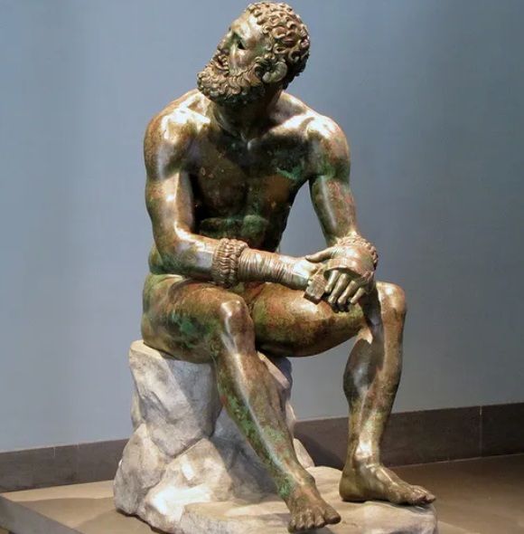

c. 330 a.C. – c. 230 a.C.
Cleantes de Assos
O herdeiro obstinado
Cleantes chegou a Atenas vindo da cidade de Assos, na Ásia Menor, e antes de se tornar filósofo teria sido pugilista. Sem recursos para se sustentar apenas estudando, trabalhava durante a noite — carregando água e amassando farinha, segundo o relato antigo — para poder assistir de dia às lições de Zenão. Essa disciplina e perseverança se tornaram parte central de sua fama.
Ao contrário de Zenão, que se destacava pela agudeza lógica, Cleantes era lembrado por sua força de vontade e devoção quase religiosa aos princípios estoicos. Foi ele quem sucedeu Zenão como escolarca, guiando a escola por cerca de trinta anos e garantindo que o Estoicismo sobrevivesse à morte de seu fundador.
Sua obra mais lembrada é o "Hino a Zeus", um poema que descreve a divindade suprema como a razão universal que ordena todas as coisas — inclusive o que parece, à primeira vista, desordem ou infortúnio. O texto resume bem a ideia estoica de aceitação ativa: cooperar conscientemente com uma ordem racional maior do que nós.
Cleantes formou discípulos importantes, entre eles Crisipo, que mais tarde sistematizaria e expandiria enormemente a doutrina estoica, consolidando-a como uma das escolas filosóficas mais influentes da Antiguidade.
Para Cleantes, quem resiste ao curso dos acontecimentos é arrastado por eles mesmo assim — só que sofrendo; melhor é caminhar de bom grado ao lado do destino. — resumo do ensinamento atribuído a Cleantes de Assos